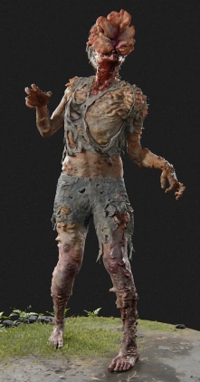
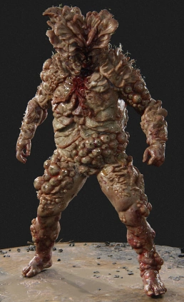
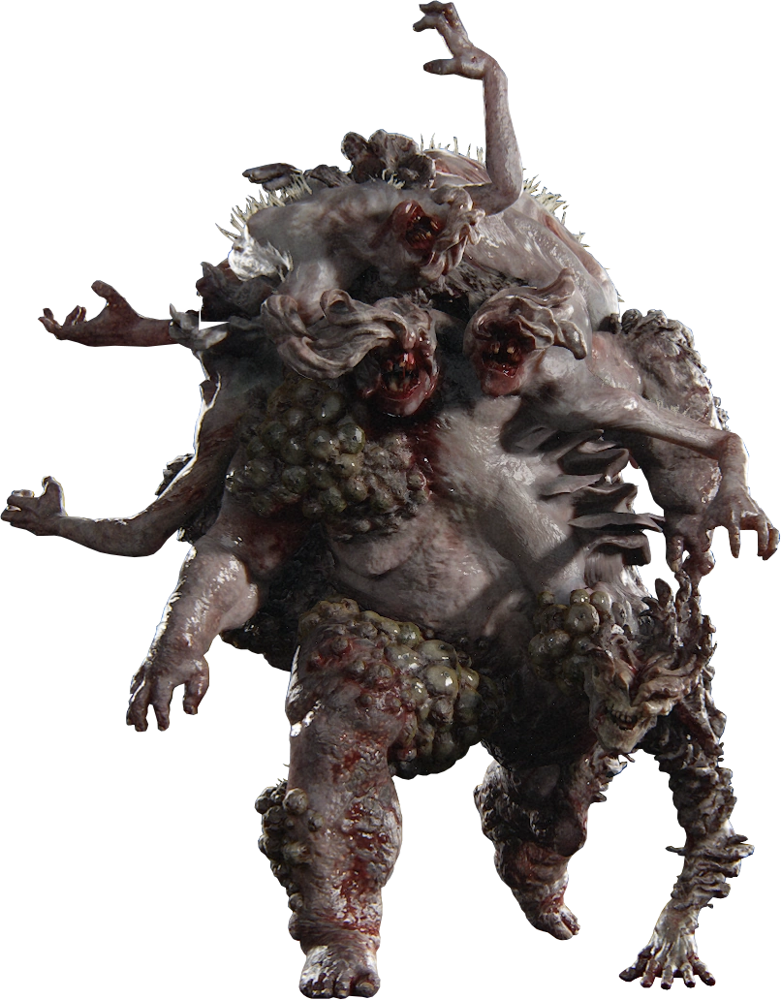

Runner:

Runners are people who recently turned into infected. They are defined by their intense speed, sluggish attacks, and tendency to attack people in hordes.
Runners are people who recently turned into infected. They are defined by their intense speed, sluggish attacks, and tendency to attack people in hordes.

Stalkers are people who have been infected from somewhere between two weeks to a year. Per their name, they stalk and hide from prey in the dark and attack at opportune moments.

Clickers are people who have been infected for at least one year. The long time elapse has allowed the fungus to spread all over their bodies, blinding them and forcing them to use echolocation to find prey.

Bloaters have been infected for several years. The fungus has led them to become slow and blind, yet incredibly strong and resilient with the fungal growth serving as armor plating.

Shamblers are people who have been infected for several years and typically inhabit areas thriving with water. While not as physically enhanced as clickers or bloaters, shamblers are able to grapple prey.

The rat king is a unique stage of infected that developed in the Seattle hospital after over twenty years of infection. Formed from several infected combining into one, the rat king is colossal in strength.